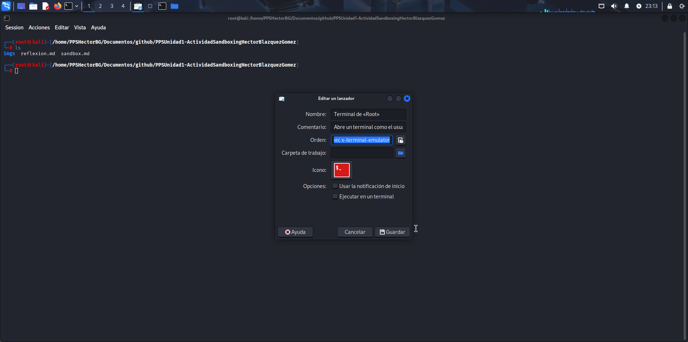
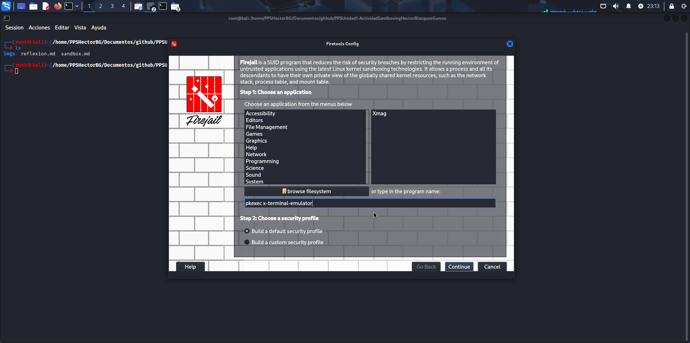

CREACIÓN DE ENTORNO SEGURO
Empezamos descargando el paquete de firetoolssi no lo tenemos isntalado ya en kali.
sudo apt update && sudo apt install firetools
Luego continuamos abriendo firejail y dentro de el podemos observar que se puede añadir una aplicación, sabiendo esto podemos abrir desde el menú una terminal de administrador, hacer click derecho encima y darle a "editar" entonces ahí podremos ver la orden de ejecución.

Una vez copiado y pegado en la barra inferior podemos guardar la configuración y cuando queramos abrir la terminal como root se nos abrirá el entorno seguro (Se puede verificar porque al ejecutar el comando mountvemos que hay archivos temporales).


Y ahora solo nos hace falta comprobar si tenemos instalado python , meternos en la carpeta del proyecto y ejecutar el entorno virtual de python para tenerlo todo listo.

 Para acabar ejecutamos nuestra aplicación en el entorno seguro que acabamos de crear.
Para acabar ejecutamos nuestra aplicación en el entorno seguro que acabamos de crear.